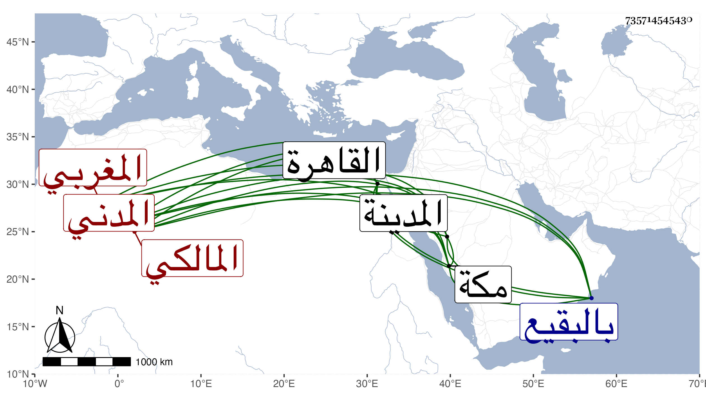

0902Sakhawi.DawLamic.ITO20230111-ara1.EIS1600.735714545430
Biography ID: 735714545430
116
محمد بن محمد بن أحمد بن محمد بن مسعود ناصر الدين أبو الفرج بن الزين أبي المعالي بن الشهاب المغربي الأصل المدني المالكي ويعرف بابن المزجج . ودخل القاهرة ولقيني بمكة فلازمني في سنة ست وثمانين حتى أخذ عني الموطأ وغيره دراية ورواية وكانت له بعض مشاركة. مات في ربيع الأول سنة خمس وتسعين بالمدينة ودفن بالبقيع رحمه الله .
